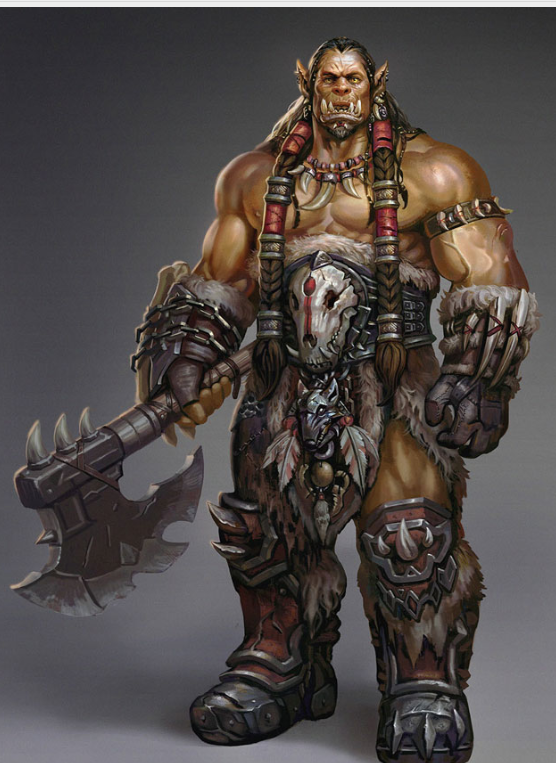
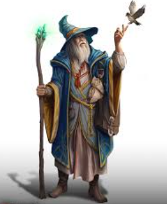

Cocoloco

Mi Aventurero
Nombre: Cocoloco
Alias:Cocoloco
Raza: Orco
Clase: Mago
Trasfondo: Erurito
Iniciativa :
Velocidad : 9 m
Percepcion Pasiva :
Apariencia
Vestimenta Craneos colgando, Mascara de hueso
Personalidad
Alineamiento:
Raza:Orco
Los orcos deben su creación a Gruumsh, un dios poderoso
que vagaba por los amplios espacios abiertos del Plano
Material.
Gruumsh concedió dones a sus hijos para
ayudarles a recorrer grandes llanuras, extensas cavernas
y mares turbulentos para enfrentarse a los monstruos
que en ellos acechaban.
Incluso aunque se consagren
a otros dioses, los orcos conservan los dones de Gruumsh:
la resistencia, la determinación y la capacidad de ver en la
oscuridad.
Por lo general, los orcos son altos y fornidos. Su piel
es de color gris y tienen orejas muy puntiagudas y unos
colmillos inferiores prominentes. A los orcos jóvenes
de algunos mundos se les habla de los grandes viajes
y penurias de sus antepasados.
Muchos de estos orcos,
inspirados por esos relatos, se preguntan cuándo los
convocará Gruumsh para igualar las hazañas heroicas
de antaño y demostrar que son merecedores de su favor.
Otros orcos, sin embargo, prefieren dejar atrás esas
historias y labrar su propio camino.
Aguante incansable. Cuando tus puntos de golpe se reducen a O pero no mueres inmediatamente, puedes recuperar 1 punto de golpe. Cuando uses este atributo, no podrás volver a hacerlo hasta que finalices un descanso largo.
Vision en la Oscuridad Aumenta a 36 m
Descarga de adrenalina. Puedes llevar a cabo la acción de correr como acción adicional. Cuando lo hagas, obtendrás una cantidad de puntos de golpe temporales igual a tu bonificador por competencia. Puedes usar este atributo una cantidad de veces igual a tu bonificador por competencia y recuperas todos los usos tras finalizar un descanso corto o largo.
Clase: Mago
Como estudiante de magia arcana que eres, has aprendido a lanzar conjuros.
Espacio de Conjuros : 2
Recuperacion Arcana Tras finalizar un descanso corto, puedes elegir 1 espacio de conjuro gastado y recuperarlo. 1 vez al dia
Transfondo: Erudito
Pasaste tus años formativos viajando entre palacetes y monasterios, desempeñando diversos oficios y servicios para que te dejaran acceder bibliotecas. muchas Dedicaste tardes a estudiar libros y pergaminos para adquirir conocimientos acerca del multiverso e incluso los rudimentos de la magia, y tu mente ansía mas
Puntuacion de Caracteristicas Inteligencia, Sabiduría, Carisma
Competencia en Habilidades Conocimiento arcano e Historia
Competencia con herramientas: Suministros de calígrafo
Dote: Iniciado en la Magia
Trucos
Descarga de Fuego: Alcance: 36 m.
Arrojas una mota de fuego a una criatura u objeto dentro
del alcance. Haz un ataque de conjuro a distancia contra
el objetivo. Si acierta, el objetivo recibe 1d10 de daño de
fuego. Los objetos inflamables a los que acierte el conjuro
empezarán a arder si nadie los lleva o viste.Debe hacer una tirada de ataque que seria
1d20 + 4
Conjuros
Manos Ardientes: Una fina capa de llamas se proyecta desde ti. Todas las criaturas situadas en un cono de 4,5 m hacen una tirada de salvación de Destreza; sufrirán 3d6 de daño de fuego si la fallan o la mitad del daño si la superan. Los objetos inflamables dentro del cono que no lleve o vista nadie empezarán a arder.
Orden Imperiosa: Das una orden de una sola palabra a una criatura que puedas ver dentro del alcance. El objetivo debe superar una tirada de salvación de Sabiduría o verse obligado a obedecer la orden en su próximo turno.
(T)Crear llama Duración: 10 minutos En tu mano aparece una llama titilante, que permanece hasta que termine el conjuro. En tu mano, la llama no genera calor, no puede quemar nada y emite una luz brillante en un radio de 6 m y luz tenue 6 m más allá. El conjuro termina si lo vuelves a lanzar. Hasta que el conjuro termine, puedes usar una acción de magia para arrojar la llama a una criatura u objeto a 18 m o menos de ti. Haz un ataque de conjuro a distancia. Si acierta, el objetivo recibe 1d8 de daño de fuego.
(T)Resistencia Tocas a una criatura voluntaria y eliges un tipo de daño: ácido, contundente, cortante, frío, fuego, necrótico, perforante, radiante, relámpago, trueno o veneno. Cuando la criatura sufra daño del tipo elegido antes de que termine el conjuro, reduce el daño total recibido en 1d4. Una criatura solo puede beneficiarse de este conjuro una vez por turno.
Trucos y Conjuros
(T)Descarga de Fuego1d20 +4
(T)Daño1d10
(T)Crear LLama1d20 +4
(T)Daño1d8
(C) Manos Ardientes 3d6 (cono) .Los enemigos deben superar prueba de destreza de 13
Daño: 3d8
V, SArmas
Competencias
Ballesta de mano
Armas Simples Garrote,Dagas,Javalinas,Maza,Baston
Armadura Ligera